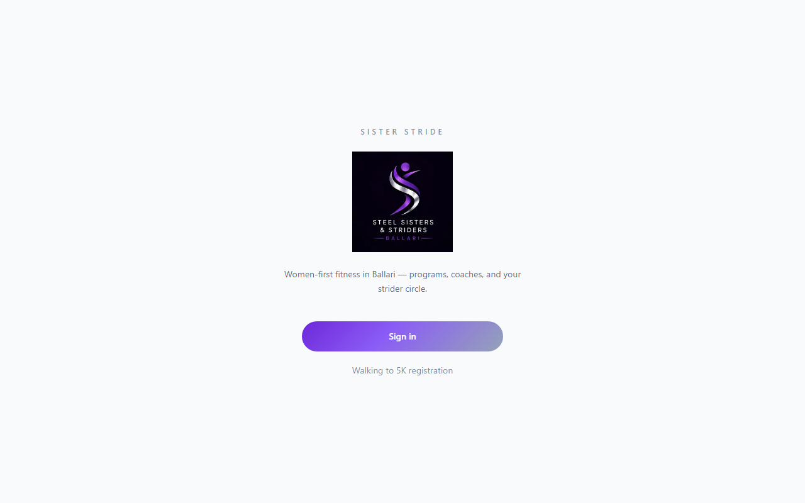
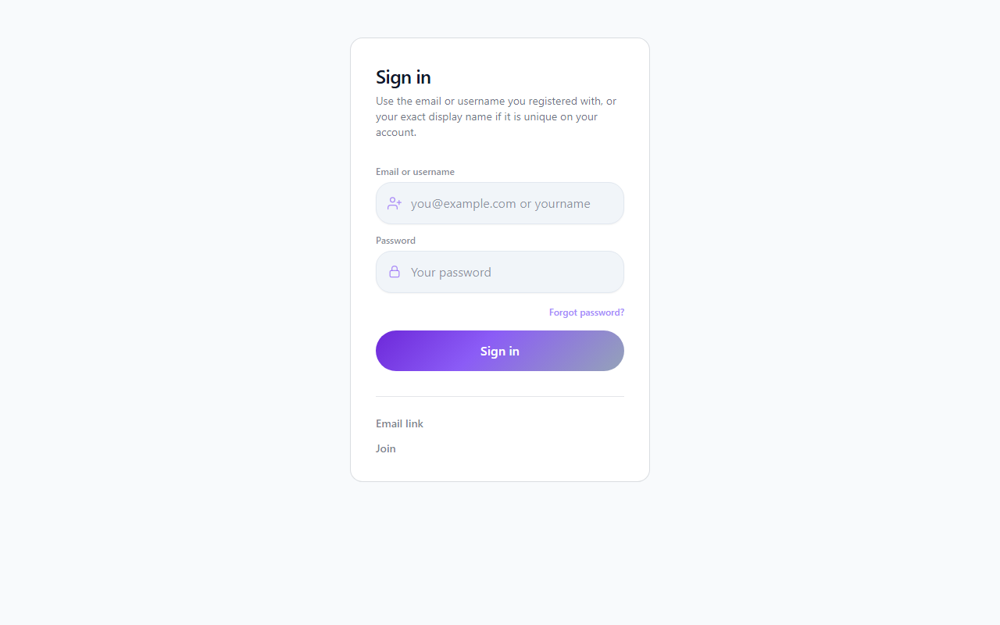
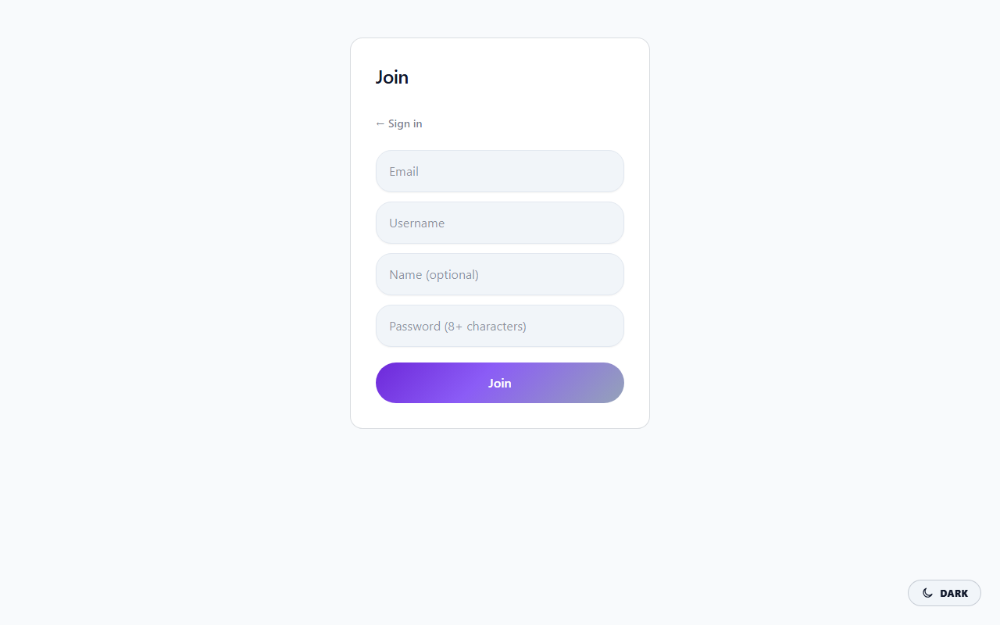
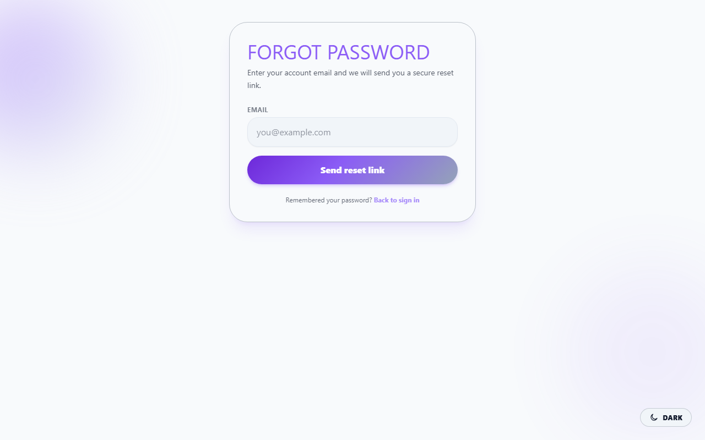
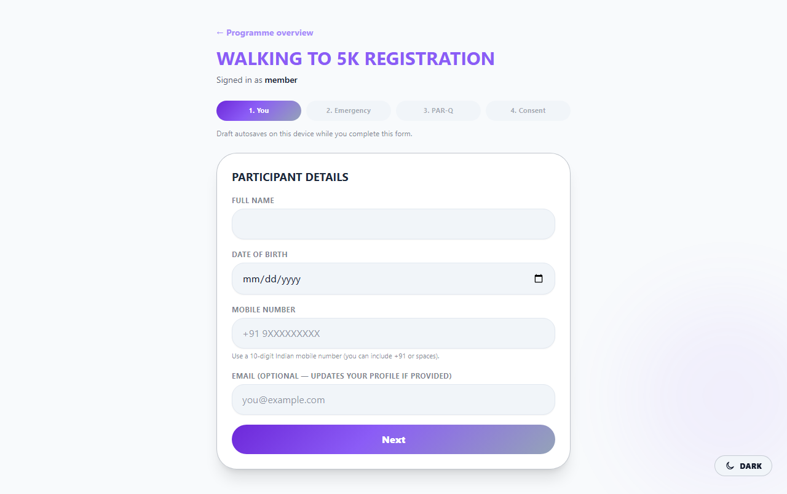

Save as PDF: Open this file in Chrome or Edge → press Ctrl+P (or Cmd+P on Mac) → choose Save as PDF → Save.
Steel Sisters & Striders — SSS Club Ballari · Member & visitor guide
This guide explains who the app is for, what you can do as a member or visitor, and how the main areas of the product fit together. Sister Stride is the digital home for a women-first fitness community in and around Ballari, Karnataka, India.
Screenshots below are produced by running Playwright against your chosen site URL (usually production or staging).
From the repo root: set PLAYWRIGHT_BASE_URL, run npm run docs:member-guide-screenshots, then
npm run docs:member-guide-pdf to rebuild the PDF. See docs/MEMBER_GUIDE_SCREENSHOTS.md for details.
Member-area shots need a seeded test account locally or on staging; they are skipped on production hosts unless you set
E2E_GUIDE_ALLOW_PROD_MEMBER=1 (discouraged for real member databases).





Full-page captures of the signed-in experience (10-app-home.png through 17-app-community.png)
are written automatically when you run npm run docs:member-guide-screenshots with
E2E_PASSWORD_EMAIL and E2E_PASSWORD on local or staging (see
docs/MEMBER_GUIDE_SCREENSHOTS.md). They are skipped on production hosts unless you explicitly set
E2E_GUIDE_ALLOW_PROD_MEMBER=1. After those PNGs exist in docs/guide-screenshots/, you can paste
additional <figure> blocks here or extend the Playwright spec to emit a second HTML template.
10-app-home.png — Member home11-app-score.png — Fitness score12-app-progress.png — Progress13-app-challenges.png — Challenges14-app-events.png — Events15-app-c25k.png — Couch to 5K16-app-coaches.png — Coaches17-app-community.png — CommunityDates and day-to-day activity in the app are oriented to India time (IST) where you see local dates and “today” for logging.
After you first sign in, you may be guided through onboarding: your profile, health basics, activity level, and goals. Complete this so your home dashboard and fitness score can work fully.
After onboarding, Home gives you a quick picture of your day and what matters next:
From Home you can open Edit profile to change details and goals later.
| Area | What you can do |
|---|---|
| Score | See your fitness score level and breakdown. Recompute refreshes your score from your latest health profile and progress (when you have enough data). |
| Progress | Log steps, weight, water, sleep, walks, runs, workouts for “today” (IST). View trends over recent weeks and months. Saving updates your dashboard and can feed your fitness score. |
| Challenges | Browse active club challenges (for example step challenges). Join a challenge, see your place on the leaderboard, and stay motivated with the group. |
| Events | See upcoming club sessions (walks, runs, yoga, meetups, and more). Register for a spot, open Details for time and place, and check in when you arrive at the venue. |
| C25K (Couch to 5K) | Explore the 12-week Couch to 5K programme: phases, session plan, strength notes, safety, and (when offered) paid enrolment through the club’s payment flow. Links to Walking to 5K registration for the full intake. |
| Coaches | Browse coaches the club lists (running, walking, strength, yoga, nutrition, physio, and more). Book session |
| Community | Read wellness articles picked for the community. Post short updates, like and comment on others’ posts. Use SOS for an urgent safety alert if the club has wired it to their support channel. |
Walking to 5K is the club’s structured path into the flagship walking programme, aligned with Couch to 5K inside the app.
The site can behave like an app on your phone: install or Add to Home Screen from your browser menu when your club’s site supports it (Progressive Web App). You get a home-screen icon and quicker access; you still sign in securely through the web.
Most readers use Member mode. Other roles exist so the same product can run the club end-to-end:
You only see these areas if your account has been given that role.
| I want to… | Go to… |
|---|---|
| Sign in or create an account | Sign in / Join on the club site |
| Fix my password | Forgot password? (needs email on account) |
| Finish first-time setup | Onboarding (shown until complete) |
| Log today’s steps or weight | Progress → Save for today |
| Update my goals or profile | Edit profile or Profile / goals flow |
| See my fitness level score | Score → Recompute |
| Join a steps or habit challenge | Challenges → Join |
| Book a club coach | Coaches → Book session |
| Register for a club walk or session | Events → Register → Check in on the day |
| Join Walking to 5K / C25K intake | Walking to 5K registration wizard or C25K page |
| Post in the member feed | Community → write and post |